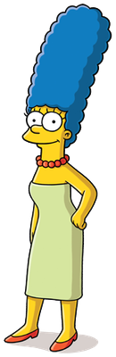

Родина Сімпсонів.

Родина Сімпсонів вперше з'явилася в етері у «Шоу Трейсі Ульман» 19 квітня 1987 року.
Ґрейнінґ презентував художнику ескізи-чернетки основних персонажів, сподіваючись, що їхня зовнішність зазнає
покращення в процесі роботи. Втім, мультиплікатори просто скопіювали його малюнки, внаслідок чого в перших серіях
герої виявилися намальованими дещо грубо і «неохайно».
За підсумками першого етерного сезону, «Сімпсони» зайняли перше місце серед усіх серіалів компанії «Fox», внаслідок
чого їх було пересунуто на рейтинговіший час доби.
- Гомер
- Мардж
- Барт
Характеристика персонажів. Фото.
-
Гомер Джей Сімпсон — милий та кумедний, проте іноді грубий і неввічливий батько родини. Гладкий, лисий,
ледачий і не дуже розумний. Він часто поводиться абсурдно, егоїстично і нетактовно, втім, залишається
симпатичним.

-
Мардж Сімпсон - дружина Гомера Сімпсона, мати Ліси та Барта. Домогосподарка, майже весь свій час
проводить удома доглядаючи
наймолодшу дитину Меґґі, а також Барта, Лісу і чоловіка. Найвідоміша особливість героїні — блакитне волосся.

-
Бартолом'ю ДжоДжо «Барт» Сімпсон — один із головних героїв мультиплікаційного серіалу Сімпсони. Барт —
найстарша дитина Гомера і Мардж Сімпсон. У нього також є дві молодші сестри — Ліса і Меґґі. Барт є втіленням
образу бешкетника та посереднього учня у школі. Разом зі своїм батьком Барт є одним із найвідоміших персонажів у
цьому серіалі.